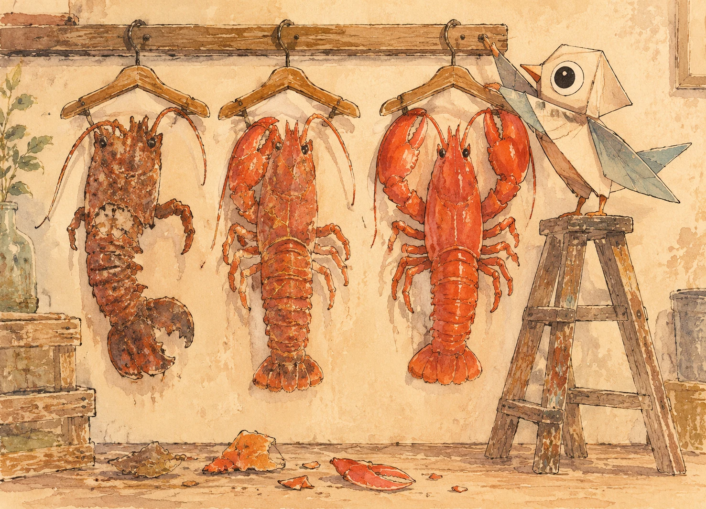
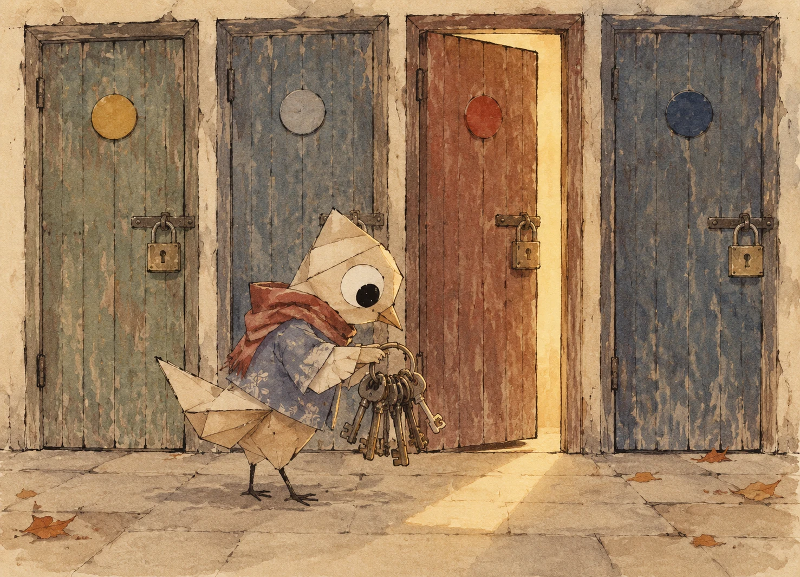
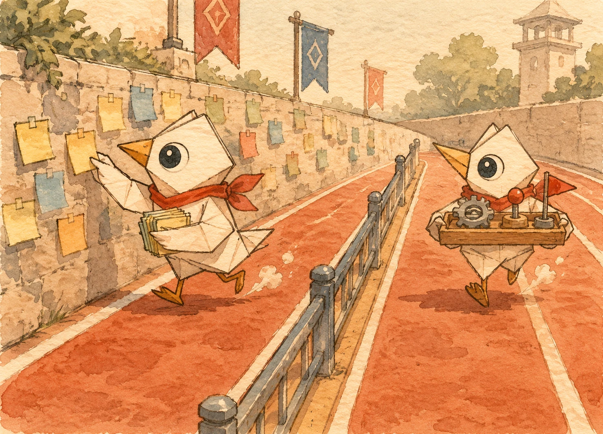
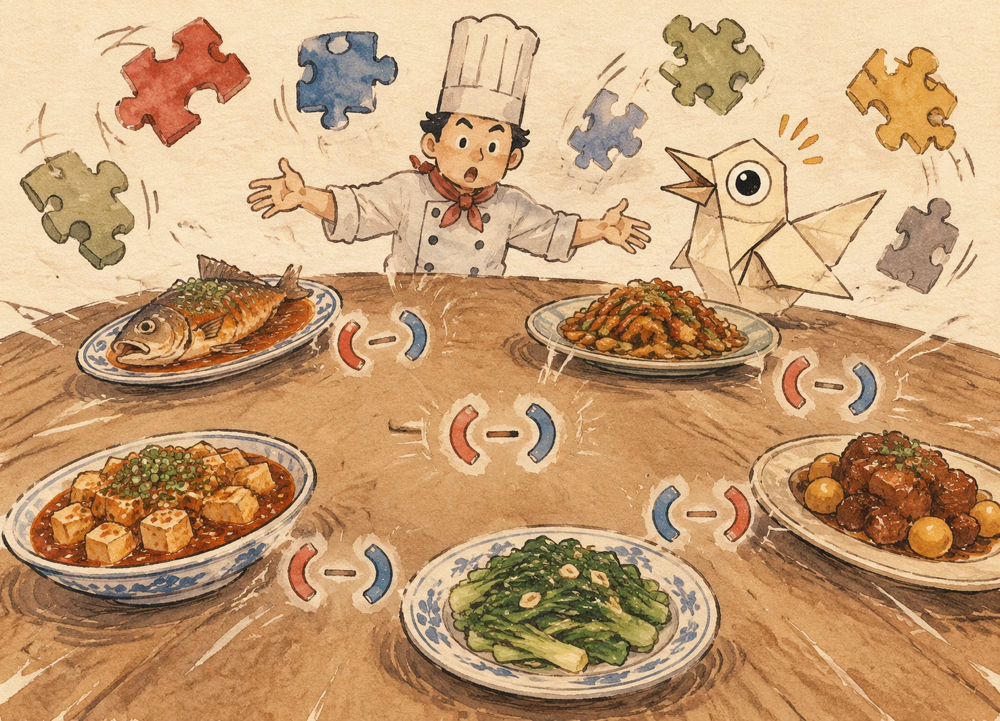

00:00
一只龙虾的三级跳
Clawdbot→Moltbot→OpenClaw：三次改名三次蜕壳——壳换了，动物没死
2025 年 11 月，Peter Steinberger——PSPDFKit 创始人、iOS 圈的老兵——发布了一个开源项目，名字叫 Clawdbot。理念一句话：AI 不该只会聊天，该替你管日历、订机票、跑任务。2026 年 1 月，它病毒式爆红；然后两个月里，它换了三次名字。
| 时间 | 事件 | 出处 |
|---|---|---|
| 2025-11 | Clawdbot 发布 | Wikipedia · OpenClaw |
| 2026-01 | 病毒式爆红，「真的会做事」出圈 | 同上 |
| 2026-01-27 | 商标压力下仓促改名 Moltbot——作者后来自认「不太顺口」 | Forbes · dev.to 回顾 |
| 2026-01-30 | 再度改名 OpenClaw，社区争议、域名被抢注 | Forbes（01-30） |
| 2026-03 | 正式公开发布，龙虾 🦞 定妆：「The lobster way」 | 对比文口径 |
| 2026 中 | 作者被 OpenAI 挖走；项目由社区接管，release 列车照常发车 | Wikipedia · releases |
| 2026-11-11 | 版本列车开到 2026.11.3（另有 2026.9.37 extended-stable LTS 线） | npm · releases 页 |

OpenClaw 这个名字不是随手起的——molt 是龙虾蜕壳的本义，改名史活成了一则生物学寓言：壳是会被迫更换的，肉不会。值得盯着的还有 release 列车的成色：每一版都挂着完整的审计件——npm preflight、release CI 报告、完整性 sha512、逐 PR 的贡献记录（本文第 04 章引用的几条修复原文即出自这套台账）。一个被挖走创始人的社区项目，把工程纪律守到了比多数商业产品更严的程度。
2025-11 ── 2026-11-11，共 7 站。点「下一站」。
一个改了三次名字的项目，为什么没有死？把「改名」拆开看：第一次是法律强迫（商标太像 Claude），第二次是仓促补救，第三次是社区吵出来的。三次都动了壳，没一次动肉——自托管（跑在用户自己的机器上）、开源（任何人可审计）、凭证归用户（数据不进别人家的保险柜），这三根契约一根都没断。名字是壳，契约是肉。反过来想：一个只有名字没有契约的产品，改名一次就散了——2026 年的 agent 赛道上，这样的壳我们见过不少。
00:01
四代家谱，一条分水岭
「会做事的 AI」不是一代产品，是四代——分水岭只有一条：凭证和运行环境归谁
把 2026 年货架上所有「替你做事的 AI」摊开，家谱不该按公司画——公司会倒、会改名、会互相借模型（Microsoft 用 Anthropic 的模型做 Copilot Cowork 就是现成例子）。按凭证和运行环境的归属画，四代立刻清晰：
| 代 | 代表 | 跑在哪 | 凭证归谁 | 典型边界 |
|---|---|---|---|---|
| 第一代 聊天 bot | ChatGPT、Claude.ai、豆包 | 厂商云 | 厂商 | 对话与云端工具，碰不到你的设备 |
| 第二代 编程 agent | Claude Code、Codex、ZCode、OpenCode、DeepSeek Harness | 你的终端/IDE | 你（仓库级） | 出不了代码圈：仓库是工作区 |
| 第三代 云端 computer-use | Manus、Grok Bot（云端） | 厂商虚拟机 | 厂商代持 | 替你操作，但在别人家的机器上 |
| 第四代 个人 agent | OpenClaw、Hermes Agent | 你自己的设备 | 你 | 渠道、记忆、定时任务、台账全在你家 |

第二代的家族成员有一份现成的活证据。还记得 VOL.14 里那条 200 谎报的拒绝文案吗？渠道商把白名单写在正文里——Codex、Claude Code、OpenCode、Magpie、DeepSeek Harness、ZCode、Pi、Oh My Pi——八个名字全是终端形态的编程 agent。渠道商已经替我们画好了第二代的家谱：他们按客户端形态放行，因为这个家族共享同一种工作模式（在仓库里、以用户自己的额度）。
第四代则是 2026 年真正的新物种。它不只是「更聪明」——它有一套前三代都没有的器官：消息渠道矩阵（WhatsApp/Telegram/iMessage/Slack…）、设备配对、持久记忆、定时任务、技能市场、启动台账。VOL.14 里那些给我们惹祸的 boot 台账、profile 锁、设备配对表，全是这套器官的骨头。
同时，大厂在 2026 年给出了另一侧的时间线——收拢之年：
| 日期 | 事件 | 一句话 |
|---|---|---|
| 2026-01-12/13 | Claude Cowork 发布 | 面向非技术知识工作者的桌面通用 agent，官方插件生态 + 记忆 |
| 2026-03-09 | Copilot Cowork 发布 | Microsoft 借 Anthropic 的 agentic 模型 + M365，企业托管 |
| 2026-07 | ChatGPT Work 推出 | OpenAI 进入被 Cowork 占据的企业 agent 市场 |
| 2026-08-09 | ChatGPT Atlas 关停 | 2025-10-21 上线的 agent 浏览器，寿命不足 10 个月 |
| 2026-10-21 | Claude Duet 研究预览 | 从被动响应走向主动式个人助理 |
大厂在收拢（Operator 并回主应用、Atlas 关停、能力收进 ChatGPT/Codex），开源在分化（OpenClaw 的版本列车、Hermes 的新物种）。家谱的两条主干在朝相反方向生长。
为什么分水岭是「凭证归属」而不是「谁更聪明」？因为能力可以租，信任不能租。一个产品替你做事的深度，取决于你敢把多少凭证交给它；凭证交出去之后锁在谁的柜子里，决定了它在处理你最私人的任务时遵循谁的规则。聪明度每季度刷新一次，归属十年不动——所以预测一个产品的长期行为，看归属比看跑分准得多。
00:02
同物种的两种进化
OpenClaw 与 Hermes：同样的自托管、同样的开源，却往相反的方向跑
家谱第四代里有两个名字最像：同样的自托管、同样的 MIT/开源、同样的「替你做事」。OpenClaw 与 Hermes Agent（Nous Research，2026 年 2 月发布）像一对同物种，却在技能与记忆两条主干上长出了不同的器官。
| OpenClaw | Hermes Agent | |
|---|---|---|
| 出身 | 2026-01 定名（Clawdbot 2025-11 起家），社区接管 | Nous Research，2026-02，MIT 一次到位 |
| 定位 | 常驻助理：多渠道接入 + 渠道矩阵 + 设备配对 | 便携自进化：从经验自造技能的学习闭环 |
| 技能 | 预置技能市场（ClawHub），预建技能更多 | 用得越多自己写得越多（learning loop） |
| 效率 | 对比文口径：同任务省 10–20% token | 运行成本更低 |
| 托管 | 无官方托管 | 可选 Hermes Cloud 常驻实例 |
| 蜕壳史 | 改名三次 | 一次到位 |

两种进化为什么不合并？关键在产出物的可审计性。学习闭环写出来的技能是它自己创作的——好用，但每一件都不可预先审计；而常驻助理的核心价值恰恰是可审计、可回滚：VOL.12 里那台巡检 Agent 的每道闸、VOL.14 里那张 boot 台账，逻辑都建立在「行为可以预先框定」上。往「越用越强」跑和往「越用越可信」跑是两个方向——硬合并，两边都要打折。
00:03
大厂为什么不缝合
Cowork 领跑、Atlas 关停：这个问题的答案在 2026 年不是推理，是实录
「把所有优点缝成一个产品」听上去像大厂迟早会做的事——他们有算力、人才、钱包。2026 年这一整年，四家大厂用四次不同方向的尝试，把答案写在了新闻里。结论先行：缝合的失败不是能力失败，是形态失败。

四条结构性原因，条条有出处
① 商业模式对立。个人 agent 的核心优点——自托管、用你自己的 Key、凭证不出门——每一条都在瓦解订阅与推理计费。OpenClaw 没有官方托管（对比文原话），不是做不到，是不敢做：做了就变成自己卖自己的平替。所以大厂版的「个人 agent」全是云端形态：Claude Cowork 接记忆与插件，Copilot Cowork 挂 M365，全部可计费。
② 责任与合规。用真实账号替人订票、发帖、支付，出错算谁的？开源社区可以说风险自担，大厂面对的是企业法务与监管。于是每个大厂版都要加审批流、沙箱、Watch Mode——每加一道闸，离「丝滑全能」远一步。
③ 优点互斥。Hermes 的自进化不可预先审计，与企业级可审计冲突；OpenClaw 的多模型自由路由与单一供应商计费冲突；浏览器专项深度（browser-use 类）与平台广度冲突——专，是快的来源，也是合不进来的原因。
④ 集成复杂度。每接一层别人的能力，就背一层别人的状态机——这句话的完整证据链在 VOL.14：boot 台账、profile 锁、PID 复用、渠道白名单、重试预算，五起事故全是缝合处的崩开。大厂内部算的账更直白：与其缝五家最好的部分背五份债，不如垂直整合自家一整套背一份债。
选中两项，看它们之间是握手还是相斥。
Atlas 之死说明了什么？一家最有资格「缝合」的公司（算力、人才、钱包全齐），把一个聚合了浏览器与 agent 的产品养了不足十个月，然后亲手关停，官方口径是「浏览器是功能，不是目的地」。这不是能力翻车——是形态翻车：目的地决定形态，而大厂的目的地是收拢回主应用，因为只有收拢才能计费。2026-07 推出 ChatGPT Work 补位企业市场、10 月 Anthropic 转向「主动式」的 Duet 研究预览——每一步都在收拢的方向上。市场图谱今年已收录约 150 家公司、16 个层级，而「全能缝合怪」在这个图谱里没有格子可放。
00:04
我们站在哪
家谱的最后一笔，是把自己画进去
家谱画完，必须回答的问题是：Easel 站在哪一格？答案在第四代的枝上——借个人 agent 当根系统（OpenClaw 的渠道矩阵、记忆、定时任务），长自己的垂直枝（社媒创作、发布、回执）。你的机器、你的凭证、你的台账——VOL.14 五起事故教会我们的每一条，都建立在第四代的归属之上。
而 VOL.14 的接入前三问（状态写在哪、怎么判活、重试上限在哪），在家谱面前可以补上第四问：你要接的这家，在家谱第几代？代际决定行为边界——第四代才替你管台账，第二代只管你的仓库，第三代在别人家的机器上替你操作。选底座、选渠道、选协作对象之前先对号入座，很多「期待落空」根本不会发生。
2026.9.9 ──→ 2026.11.3，共 6 站。点「下一站」。
凭证和运行环境归谁，比功能清单更能预测一个产品的行为——功能每季度刷新，归属十年不动。选型先对号入座，再谈跑分。
Clawdbot→Moltbot→OpenClaw 三次改名三次活，靠的是自托管、开源、凭证归你三根契约。只有名字没有契约的产品，改名一次就散。
大厂每收拢一格（Atlas 关停、Operator 并回主应用），本地系就多一台状态机要学、多一块空地要占——这不是口号，是 2026 年家谱上量出来的位移。
这篇没解决的：Hermes 学习闭环实测（未上手，不做纸面评判）；ClawHub 技能生态的逐项盘点；国内系（夸克、Tabbit）暂不入谱——凭证模型不透明，家谱宁缺一行，不猜一格。